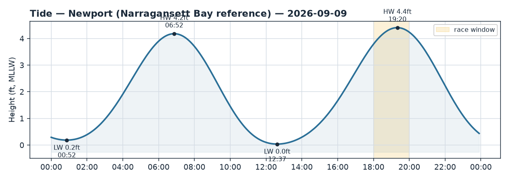
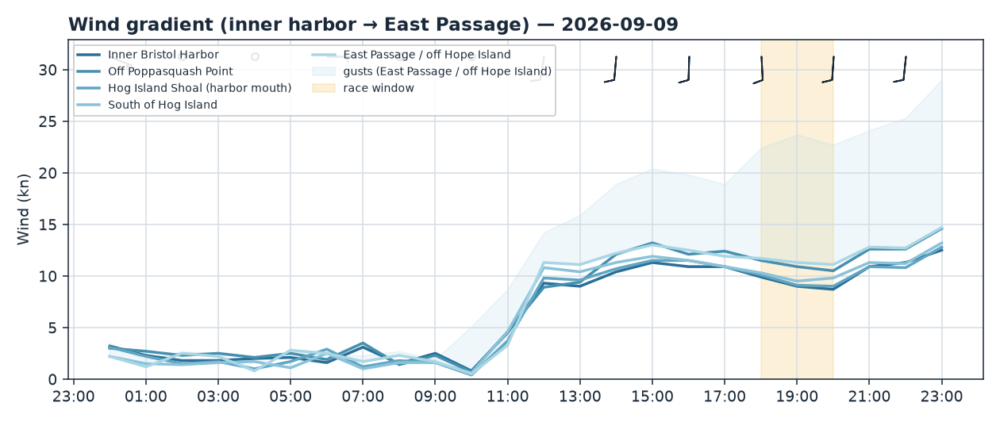
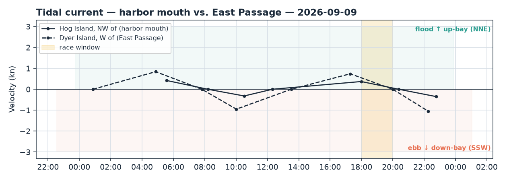

Bristol Harbor · Rhode Island
Wed 09 Sep 2026 · 18:00–20:00
Southerly sea breeze 10–12 kt (stronger up-bay/Passage), a weakening flood sliding to slack near 20:00, high water 19:20 — deep, no shallow worries but wind-against-current chop early.
Wind
Solid southerly for the evening — the fixes sit tight from S/SSW (~173–187°) and the models are all but stacked (spread 0.2–1.6 kt), so treat the direction as high-confidence. Window average runs 9–11 kt with gusts pushing into the low 20s. The gradient favours the seaward and outer shore: East Passage / off Hope Island is strongest at 11.4 kt and Poppasquash Point 11.0 kt, while the inner harbor and the Hog Island Shoal mouth are softer at 9.2–9.4 kt — a 2 kt lift for getting out from under the harbor.
Expect the breeze to veer (toward the SSW) as the evening runs, most at the seaward fixes (Hog south and East Passage veer ~9°, ending ~182–187°). One flag worth respecting: the up-bay anemometer at Conimicut Light is already blowing 18–20 kt with the S wind funneling up the Passage, well above the 9–11 kt forecast, while Newport at the Passage mouth reads a milder 11–12 kt. The daytime obs/model check agreed (ratio 1.07), but that Conimicut number says the upper-bay end could over-deliver — don't be surprised by heavier puffs up the Passage, and rig for the gusts, not the average.
Current
Both stations are on a weakening flood sliding to slack through the window. At the harbor mouth (Hog Island NW, ACT2171) the flood peaked ~17:59 at ~0.4 kt and goes slack at 20:23 — a gentle NNE set (~011°, up-bay into the harbor) that fades to nothing by the finish. In the East Passage (Dyer Island W, ACT2156) the flood peaked ~17:17 at ~0.7 kt and goes slack right at 20:00 on a ~023° NNE up-bay set — the stronger of the two, but bleeding off through the race.
Because the wind is from the S and the flood sets NNE up-bay, this is wind against current — short, steep chop early in the window, easing as both stations relax to slack around 20:00.
Tide
High water 19:20 (4.4 ft), right in the middle of the window, so you're near the top of the tide the whole race — plenty of depth over the harbor-edge shallows and committee-boat anchorages. No shallow-water caution today.
Tactical call
Pressure is the first lever: the breeze is 2 kt stronger to the S/seaward (East Passage, off Hope Island) and off Poppasquash Point than inside the harbor or at the Hog mouth. When the course lets you, work toward the seaward, up-Passage pressure — that's also where the puffs are running hottest per Conimicut. Play the veer toward the SSW as the evening progresses; stay in phase rather than committing early to a single edge.
On current, it's a light, fading flood setting NNE up-bay. Heading north/up-bay, take the channel axis for the free push (strongest in the East Passage while it lasts); heading south/seaward into the flood, hug the shallower shore edges to duck the on-the-nose set. By ~20:00 the current is essentially slack and stops mattering — the last legs are a pure pressure play.
If the course is set: - N–S windward/leeward — the E–W pressure gradient is your cross-course lever: favour the west/Poppasquash side for breeze. Ride the up-bay flood in the channel on the northbound beat; work shore edges southbound early. - J-hook out of Bristol Harbor — start in the near-slack inner harbor, then the hook into the mouth/Passage flood flips the favoured lane; expect fresher, veered breeze once you clear Hog Island Shoal. - Around Hog Island — call each leg on its own: NNE flood helps the up-bay legs, hurts the seaward ones (work the shore there), and it all goes slack toward 20:00. - Out-and-back (light air) — not really light tonight, but the same logic holds: pressure dominates — get out to the seaward/Passage breeze; the weakening flood is a minor factor.
Reference: 2026-09-09_tide.png, 2026-09-09_wind.png, 2026-09-09_current.png.


